取材の準備から、記事にするまで。
話を聞きながら手で書いて、あとから文字で読み返す。

人物像フリーランスのライター。お店や人物への取材記事を書いている。
- 取材前日
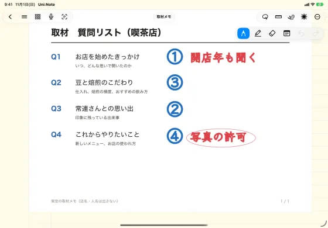
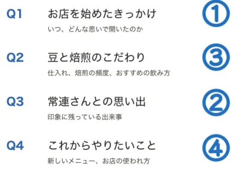
- 取材中
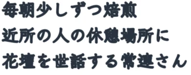
- 取材直後
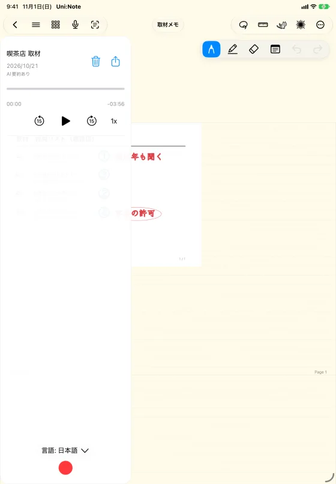
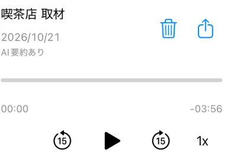
- その日の夜
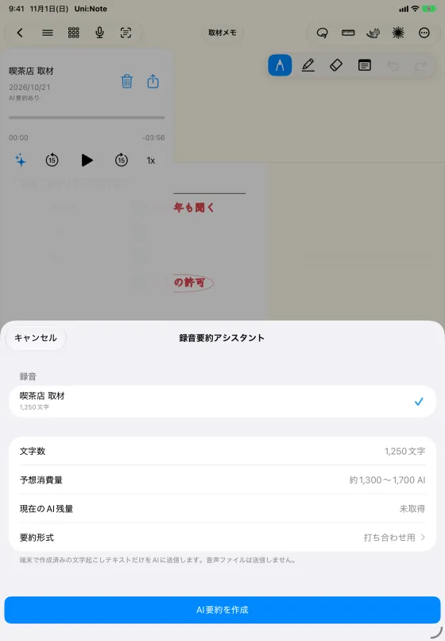
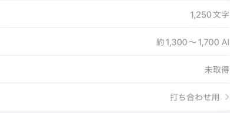
- 執筆時
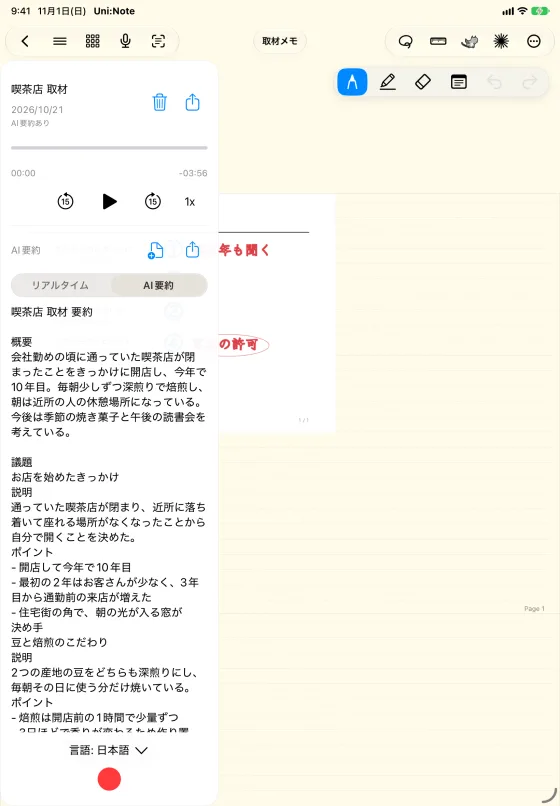
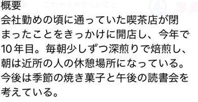
- 後日
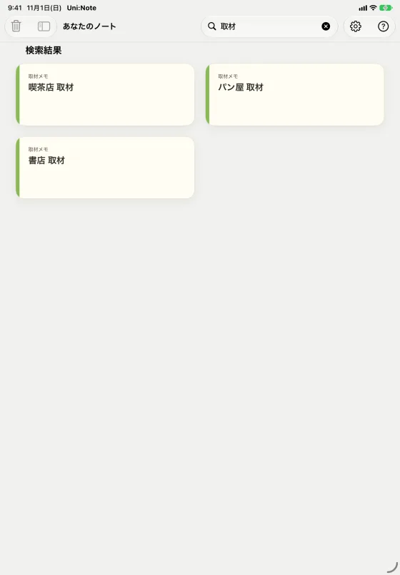
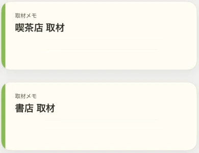
おすすめ設定
| 設定の場所 | 設定項目 | おすすめ |
|---|---|---|
| 設定 › 表示設定 | 本棚の項目の呼び方 | カテゴリ（例: 取材先・企画ごと） |
| 設定 › 学習支援 | ホームに問題集を表示 | オフ |
| 設定 › 学習支援 | ホームに時間割を表示 | オフ |
| 設定 › 学習支援 | AI要約の既定形式 | 打ち合わせ用 |
| 設定 › 表示設定 | ノートを開いている間はスリープしない | オン |
| 設定 › ノート設定 | ナビゲーションバー | 録音を手前に |
設定はいつでも戻せます。


- 録音は取材相手の同意を得てから行ってください。
- 録音はPremium／Premium Plus、AI要約はAI残量を使用します。
- 文字起こしとAI要約は、対応する端末・環境で利用できます。
- AIの要約は、必ず録音・メモと照らし合わせて確認してください。